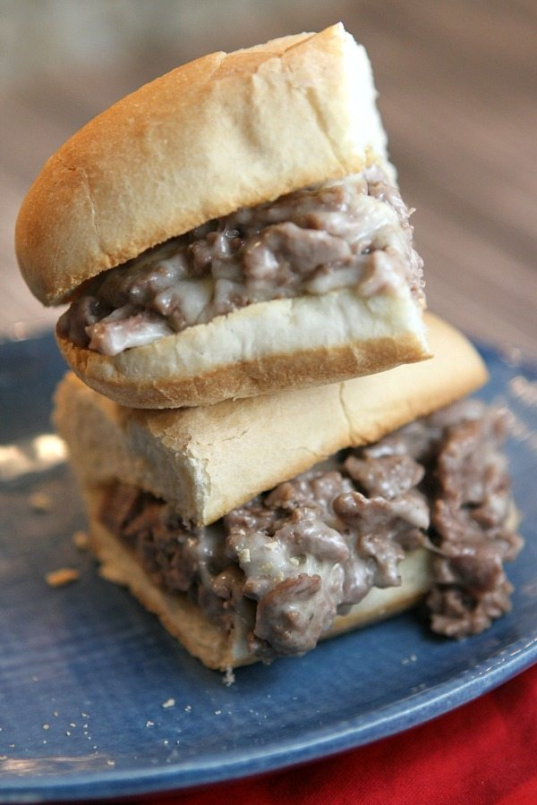

Philly Cheesesteak Sandwich Recipe

A delicious variation of the famous sandwich from the City of Brotherly Love
Ingredients (4 sandwiches)
- 1-2 pounds ribeye steak, trimmed and thinly sliced
- 4 Hoagie rolls
- 1 onion (large)
- 8 slices of Cooper Sharp or other white American cheese
- Salt
- Black pepper
Directions
- Slice hoagie rolls 3/4 of the way through. Chop, dice, or slice onions and thinly slice beef (slightly frozen beef can be sliced easier.
- Add oil to your pan/cooktop and sautee onions until caramelized then transfer to bowl.
- Spread the super thinly sliced steak in an even layer onto cooktop. Let brown for a couple of minutes undisturbed then flip and season with 1/2 tsp salt and 1/2 tsp black pepper. Sautee until steak is fully cooked through then stir in the caramelized onions.
- Divide into 4 even portions and top each with 2 slices of cheese and turn off the heat so the cheese will melt without overooking the meat.
- Place bun over each portion and use a spatula to scrape the cheesy beef into your bun as you flip it over. Serve warm.